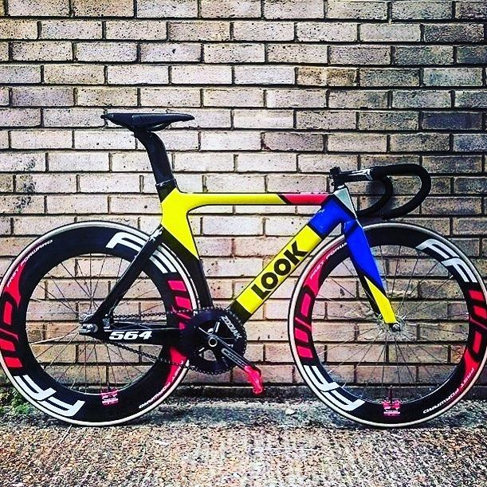
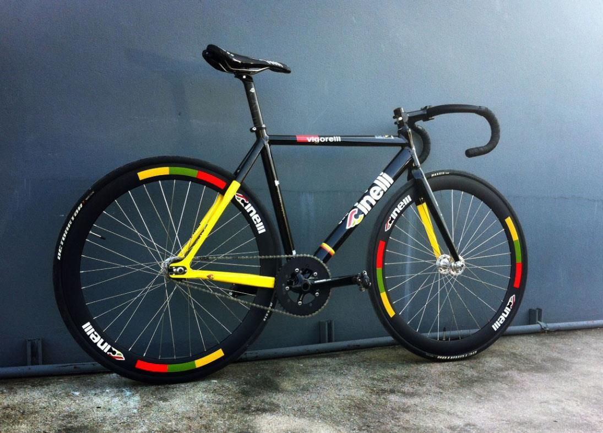

| FIXIE A fixie, or fixed-gear bike, is a bicycle with only one gear that cannot move unless the pedals are being turned12345. It is a single-speed bicycle with no freewheel mechanism, meaning that the pedals always spin together with the rear wheel235. The rotation of the rear wheel is locked to the rotation of the pedals3. There is no “free-wheeling” or “coasting” on a fixed gear bike because the pedals move when the wheels do | |
|---|---|
|  |  |
Back To Home Page? | |